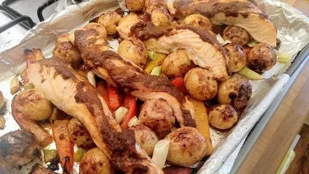

Tikka salmon traybake
30 mins
Serves 2

This speedy salmon traybake is ready in 30 minutes and less than 600 calories per serving.
Ingredients
- 2 tbsp tikka masala curry paste
- 3 tsp sunflower oil
- 300 g small new potatoes, quartered
- 1 pepper (any colour), deseeded and chopped
- 0.5x 30 g pack mint, leaves only
- ⅓ cucumber
- 100 g natural yogurt
- 1 lime, juice of 0.5 plus wedges to serve
- 2 salmon fillets
- 1 bunch spring onions, trimmed
Instructions
- Heat the oven to 200°C/Gas 7. Line a roasting tray with baking paper. Combine half the
curry paste2 tbsp
with 2 teaspoons of oil3 tsp
and some seasoning, then coat the potatoes300 g
in the mixture. Add the pepper1
, then spread out in the roasting tin. Bake for 20 minutes.
- Chop the
mint0.5x 30 g pack
. Cut the cucumber⅓
in half lengthways, scrape out the seeds, then dice. Mix the cucumber⅓
and most of the mint0.5x 30 g pack
into the yogurt100 g
to make a raita. Season and add lime1
juice to taste.
- Coat the
salmon2
in the remaining oil3 tsp
and curry paste2 tbsp
; season. Add with the spring onions1 bunch
to the roasting tray, and return to the oven for 7-8 minutes until the salmon2
is just cooked. Scatter with the remaining mint0.5x 30 g pack
and serve with lime1
wedges and raita.
-
kcal
533
-
fat
28 g
-
saturates
5 g
-
carbs
35 g
-
sugar
13 g
-
fibre
7 g
-
protein
32 g
-
salt
0.8 g
www.sainsburysmagazine.co.uk
Short Link
Long Link